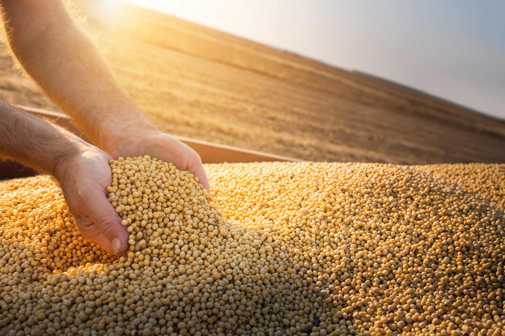

Sobre o Agrinho

A soja, cientificamente conhecida como Glycine max, é uma das culturas mais importantes e amplamente cultivadas em todo o mundo.
Originária do leste da Ásia, a soja é uma planta da família das leguminosas, que inclui também feijões, lentilhas e ervilhas.
Suas sementes são altamente valorizadas devido ao seu alto teor de proteínas, óleos e outros nutrientes essenciais.
Desafios

A soja desempenha um papel fundamental na alimentação humana, animal e na indústria.
O óleo de soja é amplamente utilizado na culinária e na produção de uma variedade de produtos alimentícios, como margarina, maionese e molhos.
Além disso, os produtos derivados da soja, como o tofu e o leite de soja, são populares entre os vegetarianos e veganos como substitutos de produtos lácteos e de origem animal..
Contribuição
Além do seu valor nutricional, a soja também desempenha um papel importante na agricultura sustentável.
Devido à sua capacidade de fixar o nitrogênio no solo, a soja pode reduzir a necessidade de fertilizantes nitrogenados, contribuindo para a saúde do solo e para a redução da poluição ambiental.
Além disso, a rotação de culturas com soja pode ajudar a controlar ervas daninhas e doenças, promovendo assim práticas agrícolas mais sustentáveis.
Relogio do soja
Tempo restante
7
dias
7
horas
7
min
7
seg